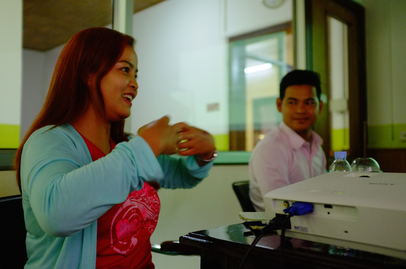

Define the Challenge
The first step in designing any solution is developing a clear understanding of the problem you are trying to address. In many cases, the challenge may already be clear before you start the design process. However, if it is too broad or complex, it may be difficult to design one solution that addresses it effectively. If this is the case, you may benefit from narrowing the problem down to something more specific before you move on.
You may need to engage others in your community or organization to help you prioritize the specific challenge you will focus on. Try asking people affected by the broader problem to help identify what is most important to them. For challenges that are especially complex or unfamiliar to you, try organizing a “Problem Identification Workshop” to bring colleagues or community members together to discuss the problem at hand, and agree on the best place to focus your efforts. Use walking through the following questions one-by-one to help you narrow down your challenge: 
- What is the bigger picture problem you want to address?
- Can that problem be broken down into smaller challenges?
- Can those challenges be solved or aided with mobile solutions?
- Are there specific constraints that make certain challenges more addressable than others? (For example: a limited timeframe, a specific mandate, access to certain groups, or a pre-defined geographical focus)
- What remaining problem is the most important or highest priority to those affected by it?